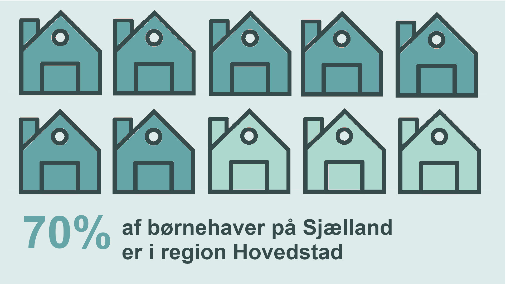
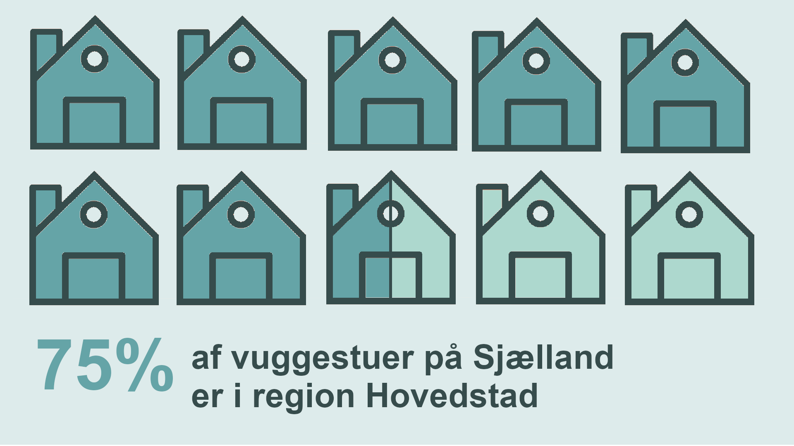

Er der gode muligheder for børnehaver og vuggestuer?
Som børnefamilie er det meget vigtigt at man finder det perfekt sted til at få passe
sit barn når man er på arbejde. Derfor kan det være utrolig vigtigt at vide hvilke muligheder man har
når man flytter ud til en ny kommune.
At finde den perfekt institution for sit barn er en længere process, og kræver at man tager
derhen for at møde personalet og stedet. Derfor kan det godt være svært at stole på nettet angående
anmeldelserne stedet har fået, så i stedet kan vi vise dig hvor mange muligheder der er for
børneinstitutioner i region sjælland og region hovedstaden.

Tallene er fået fra https://www.institutioner.dk/ og er baseret på de 5 største kommuner
ud fra indbyggertal i region Hovedstaden og region Sjælland

Tallene er fået fra https://www.institutioner.dk/ og er baseret på de 5 største kommuner
ud fra indbyggertal i region Hovedstaden og region Sjælland
Selvom at der lægger mange flere vuggestuer og børnehaver i region Hovedstaden en der gør i
region Sjælland er det vigtigt at huske at langt de fleste lægger i København, og når man begynder at
komme væk fra København begynder tallene at se mere ens ud mellem Sjælland og Hovedstaden.